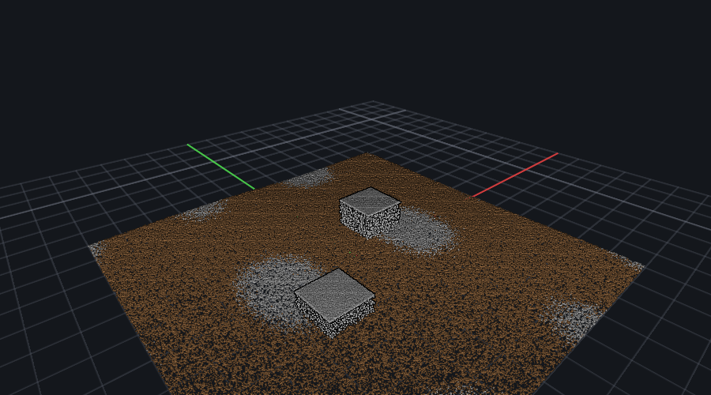
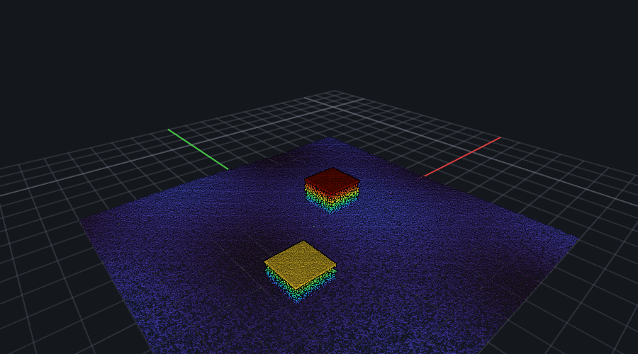
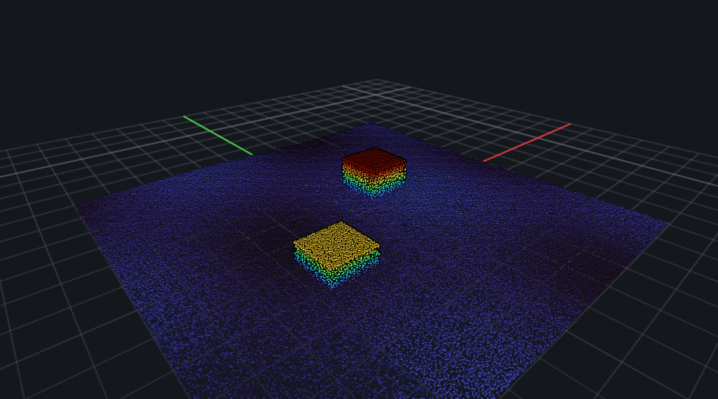

Point clouds
This tutorial follows a typical LiDAR workflow: load a LAS file, clean it, classify the ground, query it, and render it. At the end it shows how to view surveys too large for memory.
To keep the tutorial self-contained we first write a small synthetic survey (terrain, two buildings and some stray returns) as a LAS file, the way a real one arrives: in projected coordinates (here UTM-like eastings and northings).
using SpatialRender, Random
rng = Xoshiro(7)
terrain(x, y) = 0.4sin(x / 15) * cos(y / 20)
pts = Vec3f[]; cls = Int[]
for _ in 1:150_000 # ground
x, y = 120rand(rng) - 60, 120rand(rng) - 60
push!(pts, Vec3f(x, y, terrain(x, y) + 0.03randn(rng))); push!(cls, 1)
end
for (cx, cy, h) in ((15, 10, 9), (-20, -15, 6)), _ in 1:20_000 # two buildings
x, y = cx + 14(rand(rng) - 0.5), cy + 14(rand(rng) - 0.5)
push!(pts, Vec3f(x, y, terrain(cx, cy) + (rand(rng) < 0.6 ? h : h * rand(rng)))); push!(cls, 1)
end
for _ in 1:300 # stray returns (birds, dust)
push!(pts, Vec3f(120rand(rng) - 60, 120rand(rng) - 60, 15 + 25rand(rng))); push!(cls, 1)
end
survey = PointCloud(pts; intensity = rand(rng, length(pts)), classification = cls)
utm = OffsetFrame(612_000.0, 5_123_000.0, 300.0) # where the survey really is
save_las("survey.las", survey; frame = utm)Loading a LAS file
load_las reads LAS 1.0–1.4 (point formats 0–10) through a memory map. It returns the cloud and the local frame it used: coordinates are stored relative to the file's centre, so they stay precise as 32-bit floats.
cloud, frame = load_las("survey.las")
println(length(cloud), " points; local origin ", frame.origin)190300 points; local origin [611999.9998130798, 5.122999998691559e6, 319.72614523768425]Useful options: stride = 10 keeps every tenth point (quick previews of huge files), classes = [2, 6] keeps only ground and buildings, and gps_time = true also reads per-point GPS time.
Removing stray returns
Filters compute a keep-mask, so they never modify the original cloud and can be chained with |>. StatisticalOutlierFilter drops points whose nearest neighbours are unusually far away (the birds and dust):
clean = StatisticalOutlierFilter(k = 8, nsigma = 2.5)(cloud)
println(length(cloud) - length(clean), " stray points removed")300 stray points removedClassifying the ground
GroundPlaneFilter fits the dominant near-horizontal plane with RANSAC. With mode = :classify it keeps every point and marks the ground as ASPRS class 2, so colouring by class separates ground from everything else. It assumes the ground is roughly one plane, which suits a site or a street; for hilly terrain, crop the area into tiles first.
classified = GroundPlaneFilter(threshold = 0.3, mode = :classify)(clean)
classified.color_mode = Int32(COLOR_CLASSIFICATION)
scene = Scene(frame = frame)
add!(scene, classified)
camera = Camera(position = Vec3d(-70, -80, 55), target = Vec3d(0, 0, 0))
snapshot(scene; width = 900, height = 500, camera)
Ground (brown) and everything else, coloured by class
Other filters: VoxelDownsample (one point per voxel), RadiusOutlierFilter, and CropBox (e.g. to cut the vehicle itself out of a scan). A pipeline runs them in order:
pipeline = StatisticalOutlierFilter() |> VoxelDownsample(0.25)
thin = pipeline(cloud)
println(length(cloud), " → ", length(thin), " points")190300 → 136489 pointsColouring
color_mode selects how points are coloured: COLOR_HEIGHT (the default), COLOR_INTENSITY, COLOR_CLASSIFICATION, COLOR_RGB (when the file has colour) or COLOR_AGE (for streamed scans). Eye-dome lighting, on by default, shades depth edges so shapes read well even without colour:
classified.color_mode = Int32(COLOR_HEIGHT)
snapshot(scene; width = 900, height = 500, camera)
The same cloud coloured by height
Queries
build_point_index sorts a cloud into spatial chunks (the renderer does this automatically when it first draws a cloud). The same index answers neighbour queries:
index = build_point_index(classified)
roof = Vec3f(15, 10, terrain(15, 10) + 9)
idx, dist = nearest_points(index, roof, 5)
println("5 nearest points to the roof centre: ", round.(dist, digits = 2), " m")
println(length(points_in_radius(index, roof, 2.0)), " points within 2 m")5 nearest points to the roof centre: Float32[19.73, 19.73, 19.73, 19.73, 19.73] m
0 points within 2 mRays can be cast into the scene too, which is how the viewer picks points when you double-click: see raycast and pick_point.
Surveys larger than memory
build_octree converts a LAS file into an out-of-core octree in a few streaming passes; its memory use is set by bucket_points, not by the file size. OctreeCloud (or load! on the directory) then streams only the parts the current view needs.
A good habit is to clean once and convert the cleaned file, so stray returns don't end up in every view (or stretch the height colouring):
save_las("survey_clean.las", clean; frame)
build_octree("survey_clean.las", "survey_octree"; node_capacity = 20_000)
big = Scene()
load!(big, "survey_octree"; point_budget = 100_000) # draw at most 100k points
octree = big.layers[1]
println(length(octree), " points in ", length(octree.nodes), " nodes")
snapshot(big; width = 900, height = 500,
camera = Camera(position = Vec3d(-70, -80, 55), target = Vec3d(0, 0, 0)))
The octree drawn within a 100k point budget
Even with a tight budget the surface looks continuous: each node's points are drawn at a size that matches its point spacing.
Next: Maps and coordinate frames.